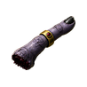
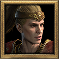

Contents 11 sections

The Descent
4 changes- Realm of Destruction Levels 4–7 are now Ember caves: ice caves lit orange, with steam vents, lava glow at the wall bases and drifting ash.
- Burrows of Pain Levels 4–7 now have spider webs and webbed ground.
- Chasm of Terror Levels 5 and 6 now have their stairs at opposite ends of the floor.
- Cinders of Hatred Levels 8–10 now have 16 rooms each, on a 4×4 grid (previously 25 rooms on a 5×5 grid).

Sanctuary Stones
7 changes- 13 Sanctuary Stone maps now hold four monster types (previously three), so the Gilded Fallen no longer takes a themed monster's place.
- Added the Night Clan to Festering Woods.
- Added the Hungry Dead to Barrows of the Sahptev Kings.
- Added the Blood Lord to Ashes of Sescheron.
- Canyons of Dahlgur now has 90 rooms (previously 100); each layout loses one row of desert.
- Archives of Zoltun Kulle now has 18 rooms (previously 20); each layout loses one dead-end arm.
- Black Canyon Mines now has slightly fewer scenery props.

Sentinels and the Crypt of the Vigil
1 change- The Last Vigil now waits at the end of a straight crypt corridor, on an open pentagram (previously a set of rooms). Public issue #6

Treasure Vaults and Gilded Fallen
5 changes- Gilded Fallen now have 100–300 life in Normal (previously 10–30).
- Gilded Fallen now have 120–270 base life in Nightmare and Hell (previously 12–27).
- Gilded Fallen now appear twice as often in the campaign.
- Gilded Fallen now appear in Sanctuary Stone maps and the Descent, at half the campaign rate.
- The Fallen in the Gilded Vault keep their previous life.

Items and Crafting
41 changes


Skill-shape stats8 changes
- Added +% Damage per Extra Projectile: each extra projectile from +# to Projectiles deals more of the skill's damage.
- Added +# Yards to Area Radius, read by Meteor, Fire Trauma, Dragon Tail, Static Field, Glacial Spike, Corpse Explosion, Poison Explosion, Volcano, Armageddon, Hurricane, Shock Field, Mind Blast, Blade Shield, Grim Ward, Blood Boil and Apocalypse.
- Added +# Yards to Aura and Curse Radius, read by every Paladin aura, every Necromancer curse, Inner Sight, Slow Missiles and Cloak of Shadows.
- Added +# Hits to Chain Lightning and Lightning Strike.
- Added +# to Maximum Summons, read by Raise Skeleton, Raise Skeletal Mage, Revive, Raven, Summon Spirit Wolf, Summon Dire Wolf, Hydra, Summon Goatman, Summon Tainted and Summon Defiler.
- Added +% Buff and Curse Duration, read by Shout, Battle Orders, Battle Command, Battle Cry, Grim Ward, Hurricane, Armageddon, Frozen Armor, Shiver Armor, Chilling Armor, Enchant, Thunder Storm, Energy Shield, Holy Shield, Conversion, Burst of Speed, Fade, Venom, Cloak of Shadows, Blade Shield, Inner Sight, Slow Missiles, every Necromancer curse, Death Mark, Consume, Engorge, Eldritch Blast, Hex Bane, Hex Siphon and Hex Purge.
- Each affected skill's tooltip shows the stat's effect.
- Monsters, bosses and mercenaries never gain these stats.
Affixes15 changes
- Added the suffix of Multitudes: +1 to Projectiles, from item level 25, on bows, crossbows, javelins, orbs, staves, wands, claws and grimoires.
- Added the prefix Weighted: +5–8% Damage per Extra Projectile, from item level 10.
- Added the prefix Leaden: +9–12% Damage per Extra Projectile, from item level 30.
- Added the prefix Hailing: +13–15% Damage per Extra Projectile, from item level 50.
- Weighted, Leaden and Hailing roll on bows, crossbows, javelins, orbs, staves, wands, claws and amulets.
- Added the prefix Sprawling: +2 Yards to Area Radius, from item level 30, on orbs, staves, wands, Druid pelts, claws, Necromancer heads and grimoires.
- Added the suffix of Reach: +2 Yards to Aura and Curse Radius, from item level 12.
- Added the suffix of Far Reach: +4 Yards to Aura and Curse Radius, from item level 40.
- of Reach and of Far Reach roll on Necromancer heads, Paladin shields, sceptres, wands, amulets, circlets and Amazon weapons.
- Added the suffix of Branching: +1 Hit to Chain Lightning and Lightning Strike, from item level 35, on orbs, staves and javelins.
- Added the suffix of the Host: +1 to Maximum Summons, from item level 30, on Necromancer heads, wands, Druid pelts, grimoires and orbs.
- Added the prefix Lingering: +10–15% Buff and Curse Duration, from item level 18.
- Added the prefix Abiding: +16–20% Buff and Curse Duration, from item level 45.
- Lingering and Abiding roll on Druid pelts, Barbarian helms, helms, gloves, boots and circlets.
- All eleven roll on magic and rare items.
Oils11 changes
- Black Oil with a Perfect Diamond can now add +# to Projectiles.
- Black Oil with a Perfect Topaz can now add Hits to Chain Lightning and Lightning Strike.
- Black Oil with a Perfect Skull can now add Maximum Summons.
- Azure Oil with a Perfect Amethyst can now add Damage per Extra Projectile.
- Azure Oil with a Perfect Skull can now add Buff and Curse Duration.
- Crimson Oil with a Perfect Amethyst can now add Yards to Area Radius.
- Crimson Oil with a Perfect Skull can now add Yards to Aura and Curse Radius.
- Clear Oil with a Perfect Diamond no longer adds Requirements.
- Clear Oil with a Perfect Skull no longer adds Half Freeze Duration.
- Clear Oil and Black Oil with a Perfect Topaz no longer add Light Radius.
- Black Oil with a Perfect Skull no longer adds Knockback or Attacker Takes Damage.
Quivers7 changes
- Added Hexed Arrows and Hexed Bolts. Each has Amplify Damage or Lower Resist: 5% chance on striking, level 3 at item level 1–35, level 8 at 36–65 and level 15 from 66.
- Added Flight Arrows and Flight Bolts, with 10% Increased Attack Speed at item level 1–35, 15% at 36–65 and 20% from 66.
- Added Anointed Arrows and Anointed Bolts, with +5 to All Resistances at item level 1–35, +8 at 36–65 and +12 from 66.
- Hexed, Flight and Anointed quivers drop in the campaign as magic and rare items: rarely in Normal, more often from Nightmare.
- Added Graven Arrows and Graven Bolts. They drop only in Hell and endgame areas, and take up to 3 sockets, with shield bonuses from gems and runes.
- Arrows and bolts no longer run out, including plain white quivers.
- Vendors now sell only plain white arrows and bolts.

Currency
6 changes


- The currency guide now shows how the Finger of the Council's hidden roll picks the set piece it gives, with the chance of each. How it works →
- The currency guide now shows how the Eye of Reckoning's hidden roll picks its result, with the chance of each. How it works →
- The Horn of Delving now adds 1 socket up to the item's maximum (previously always the maximum). How it works →
- Golden Oil class crafts now choose their class and skill line when cubed (previously every amulet got +3 to Fire Skills (Sorceress Only)). How it works →
- Added Soul of Legend. Cube it with a normal or superior weapon or armour, or a magic ring or amulet, to turn it into a unique for that slot, chosen by your character level.
- Soul of Legend never makes a boss-only unique, a Binding Blade, Gilt of the Carvers or Bartuc's Taming. How it works →

Uniques, Sets and Runewords
20 changes- Added Flurry (Tal Nef), required level 17, for helms, gloves and belts: +1 to Projectiles.
- Added Squall (Eth Tal Ral), required level 19, for bows and crossbows: +1 to Projectiles, 10% Faster Cast Rate, 10% Increased Attack Speed, +15 to Mana.
- Added Torrent (Eld Ral Ort), required level 21, for swords, staves, sceptres and daggers: +1 to All Skills, +1 to Projectiles, 20% Faster Cast Rate, +20 to Mana.
- Added Cloudburst (Ort Shael Um), required level 47, for bows, crossbows, swords, staves, sceptres and daggers: +1 to Projectiles, +15–20% Damage per Extra Projectile, 20% Faster Cast Rate.
- Added Expanse (Ort Lum), required level 37, for staves, orbs and claws: +2 Hits to Chain Lightning and Lightning Strike, +2 Yards to Area Radius, 20% Faster Cast Rate.
- Added Mandate (Shael Dol), required level 31, for helms: +2 Yards to Aura and Curse Radius, +1 to Maximum Summons, +15–20% Buff and Curse Duration.
- Hail now uses Tal Ort Fal (previously Tal Ort Sol).
- Hail now requires level 41 (previously 27).
- Hail now fits helms and gloves (previously helms).
- Hail now grants +2–3 to Projectiles (previously +1–2).
- Existing Hail items keep their stats.
- Annihilus and the Hellfire Torch no longer drop from champions and unique monsters in the endgame.
- Uber Diablo in Uber Tristram now always drops a Hellfire Torch.
- The Uber Tristram event's bonus charm is now always one of Legacy of the Horadrim's unique large charms.
- The old 3×1 version of The Gilded Purse has been removed; the 1×1 version stays.
- Added The Patient Hand, a three-piece Martial Arts set (Stillpoint Coronet, Hush of the Wyrm, Coil of Patience) from the Shade of Bartuc.
- Added The Second Shadow, a three-piece Shadow Disciplines set (Twinned Talons, Locket of Fading, Band of the Cast Shadow) from the Shade of Zoltun Kulle.
- Added Snarekeeper's Tread, trap boots with +1 Maximum Summons, from the Shade of Zoltun Kulle.
- Added Cinderwake, a fire-trap claw (Greater Talons, required level 85) with +2–3 to Wake of Fire and Inferno Sentry, dropped by the tier 13 to 15 Sanctuary Stone bosses.
- The Binding Blades and other boss-only, quest and event uniques now sit on bases of their own. Existing copies keep their stats; their base and item type change.
Player Balance
7 changesAssassin4 changes
- Buff and Curse Duration now lengthens Tiger Strike, Cobra Strike, Fists of Fire, Claws of Thunder and Blades of Ice charges.
- Maximum Summons now raises the trap limit, up to 7.
- Area Radius now applies to Phoenix Strike and Dragon Flight.
- Lingering, Abiding and of the Host affixes can now roll on claws.

Amazon3 changesInventory and Stash
2 changes- Keys now stack to 50 (previously 12).
- Tomes of Town Portal and Identify now hold 50 scrolls (previously 20). Public issue #5
User Interface
7 changes- Weapons, armor, jewels, charms, rings and amulets now show their item level beside their name.
- Wiki boss pages now feature their special rewards with clear drop chances, fold ordinary loot away, and show Descent drops inline. In-game drops are unchanged.
- The wiki's Help page now leads with the report tools, with screenshots routed to Discord and the website form kept as a fallback.
- Fixed a bug where the wiki's build planner gave the Binding Blades and the Countess' Bodkin no attack speed.
- The build planner and skill pages now read the skill-shape stats straight from the game data.
- Fixed a bug where the Sanctuary Stones guide's "Find your stones" section was empty.
- Release notes now link each currency change to its part of the currency guide.
Public Fixes
6 changes- Fixed a bug where a fresh install showed "Data version mismatch" on its first launch. Public issue #3
- Fixed a bug where the minimap of Chasm of Terror Levels 4–7 did not draw the River of Flame. Public issue #2
- Fixed a bug where the stairs on Realm of Destruction Levels 4–7 were close together; they now sit at opposite ends of the floor. Public issue #4
- The report tool can now watch for a freeze: choose 7, Freeze (watch). After the game window stops responding for 30 seconds, it saves two dumps 10 seconds apart and says when it is safe to close the game.
- Freeze reports are now accepted by the report site.
- Fixed a bug where Cinders of Hatred Levels 2 and 3 could freeze: the stairs up in Level 3 (both layouts) and one Level 10 layout crossed a map room edge, and now sit inside one room. Public issue #11